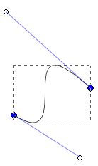
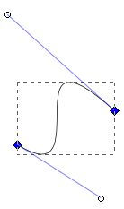
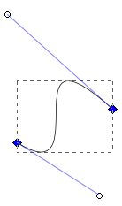

Bezier Curves
File based representations of computer graphics fall into two main categories: bitmap files and vector files. Examples of bitmap files formats are JPG, PNG, GIF, TIFF, and BMP. Examples of vector graphics file formats are PostScript, PDF, and SVG.
RGB, which represents colors as a combination of red, blue, and green, is the most common color model in computer graphics. This is the model implemented by nearly all computer displays. Most often, each RGB color is represented as an integer between 0 and 255 but sometimes it is also represented as a fraction between 0 and 1. In RGB higher values of the color make it lighter and lower values make it darker. (0, 0, 0) is black and (255, 255, 255) is white. Usually, hexadecimal is used so you would see black and white written like this: 000000 white FFFFFF black, since FF is 255.
CYMK represents colors using four channels: cyan, magneta, yellow, and black. CYMK is usually used for printing.
The HSL (hue, saturation, lightness) model is more suited to the way that artists think about color rather that how computers or printing technologies represent color, as with RGB and CYMK. Hue represents the range of colors with maximum saturation. Saturation varies the color from a pure color to a drab, gray color. The brightness varies the color from a black, to the pure color, to a white.
A bitmap or raster is a rectangular lattice of pixels. Color and possibly transparency information for each pixel is stored. Because the lattice is rectangular, the edges of figures are often antialiased to make them look smoother. For example, when drawing a black circle on a white background some of the pixels around the edge of the circle would be grey. It is difficult to scale bitmaps because they cannot be understood in terms of the shapes that are contained within them. It is also hard to select elements, such as lines and shapes, in bitmaps for the same reason.
To enable editing of bitmaps, editor often divide images into layers. For example, one layer may be a photograph and another layer some text on the photograph. In this way the layers can be edited independently. Finally, however, the layers are 'flattened' or combined.
In vector graphics images are represented as the shapes that make up the image. For example, in an image of a black circle on a white background, information about the size and color of the circle is stored. Shapes include lines, rectangles, circles and elipses, star shapes and polygons, and complex shapes made from arbitrary paths. Shapes consist of a fill and a stroke. The stroke is the outline of the shape and can have a number of properties, including color, opacity, thickness, dash patterns, and markers. The properties of fills include color, opacity, pattern, and gradients. Because of the direct representation of lines and shapes, vector graphics images can be cleaner and crisper for line drawings and very appropriate for fonts.
Vector graphics, like hand drawn or painted artwork, are distinctly different from photographs but can be brought to life with creative use of patterns and line arrangements. One of the important concepts to bring life to vector graphics is color gradient. The diagram below shows a vector graphic that consists of a square box with text in it and a linear gradient fill. The gradient changes from the top left corner of the square to the lower right corner. The box as a solid black border 5 pixels in width. The vector graphic was exported to a PNG file.
One of the main advantages of vector graphics is that a computer can more easily select, scale, and transform shapes within images. In general, vector graphics are more useful for images composed of lines and fonts, as opposed to photographs, where only bitmaps are possible. Common vector graphics formats include Scalable Vector Graphics (SVG), Flash, PostScript, and Portable Document Format (PDF).
Vector graphics can be more easily scaled by exporting to different resolutions. Software can much better optimize the smoothness of the exported images than with bitmaps, keeping the pictures crisp. Usually, vector graphics forms are finally exported to a bitmap format to allow for more universal viewing of the image. For example, a graphics designer may create an image in vector format and then export to a png format for inclusion in a web page. Whereas a bitmap has a fix size, say 800x600 pixels, there is no fixed size of a vector image.
SVG is a text based format that is easy to edit and manipulate using software, even with your own scripts. Vector images can also be animated. Flash, vector format from Adobe, is commonly used for animation. In addition, vector images can support user interaction, such as responding to mouse clicks or drag and drop. This is commonly done with Flash as well. Vector objects contain the objects to be drawn, paths for drawing the objects, fonts, groups, and various object properties.
Some kinds of images are impossible to represent with vector formats, for example, photographs and very rich textures, such as skin or wood. However, vector graphics editors may allow you to insert photographs into vector images.
Paths are a key concept in vector graphics and critical in dealing with text. A path is a sequence of nodes connected by straight curved line segments. The figure below shows an open path with both straight and curved segments. The nodes are shown with large black squares and the blue fill shown for effect
A path can be open or closed. An open path has different beginning and end nodes. A closed path has identical beginning and end nodes. Subpaths are created if any adjacent nodes in a path are not connected by a line segment. This is very similar to having multiple paths. Subpaths may be used to create holes in a path. The figure below shows how a character is composed of a path. There are several subpaths in this character.
The curved segments in paths are usually constructed form Bezier curves, named after the French engineer Pierre Bezier (1910—1999). The shape of a Bezier curve is determined by four points. Two of these points are nodes on the curve and two are handles or controls. A Bezier curve is completely within the quadralateral formed by these four points. The lines between the nodes and the control points are tangential to the curve at the nodes.

Clothoid splines have the same curvature on each side of a point. They are specified by a series of points all of which fall on the curve. There is no need to work with control points like Bezier curves, which can make them easier to edit. Clothoid splines can be converted into Bezier curves.
In 1984 Adobe released PostScipt, one of the earliest and most popular vector graphics formats. A PostScipt file is actually a program in a complete programming language that a program or printer must run to render an image. PostScipt is very popular with printer manufacturers and became the de facto standard for sending files to printers. One of the disadvantages of PostScript is that you cannot tell what a file will render like without running it. Encapsulated PostScript (EPS) is a Adobe developed to try to overcome the limitations of PostScript. However, EPS still represents vector graphics in terms of a program that must be run.
Adobe introduced the Portable Document Format (PDF) in 1993. It is an open format, with an ISO standard, that is free for anyone to implement. PDF is a very popular format for print and design. PDF represents vector graphics images without the need to execute a program, like PostScript.
SVG is an XML standard from the World Wide Web Consortium (W3C) to represent vector graphics. The first version was released in 2001 and SVG 1.1, released in 2003, is the current specification. SVG supports transparency, gradients, Unicode, animation, and many other things for needed to support modern applications. You can view SVG files in many web browsers, except Internet Exlorer (IE). For IE you need to export to a bitmap format. SVG provides direct support for fonts.
For more information on vector graphics see [Kirsanov]. For more about PDF see [Adobe 2004]. For more on SVG see [W3C].